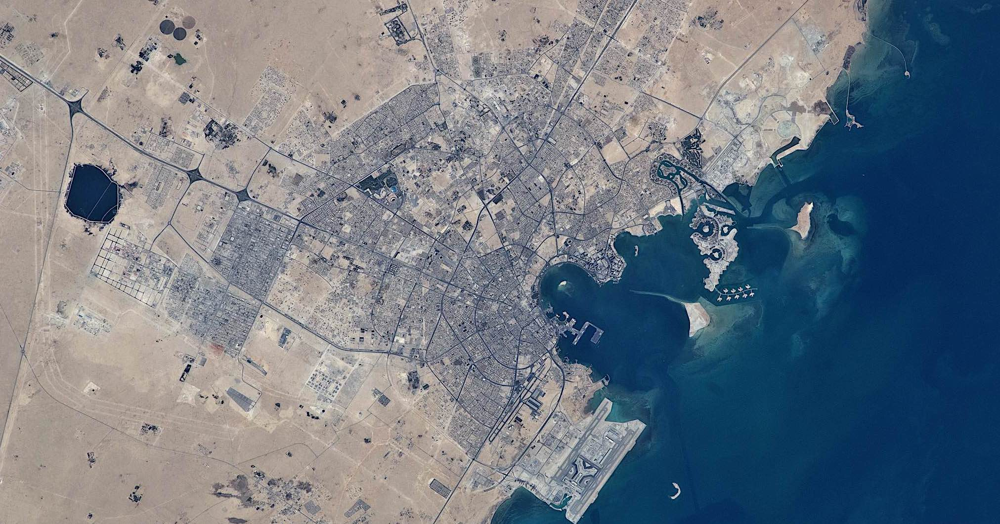

Containerized shipping has revolutionized the way goods move around the world, setting standards that allow for a diversity of goods to trade at a scale never seen before. But packed among the thousands of standarized containers that arrive into the United States are millions of individual stories that paint a infinitely complex picture, from Qatar's exports amidst of a months-long blockade to the mundane industrial products that power the economy.
Using the U.S. Customs and Border Protection's 'Automated Manifest System' (AMS) data published by
Enigma, we can peer into container vans for a granular look at the contents, customers, and commercial relationships that drive our global economy. This analysis scratches the surface of 23 million records that each reveal a strand of the complex web of trade.
Ports in Los Angeles, Long Beach, and New York dominate international container shipping in the United States. Ports along the Gulf Coast outpace the container ports by measure of tonnage thanks to the massive barges of grain floating down the Mississippi.
Analyzing the Enigma dataset for individual daily records shows tens of thousands of shipments being processed daily.
It's not just New York and Los Angeles. Smaller ports like Gramercy, Louisiana, Aberdeen, Washington, and Wilmington, Delaware are among the hundreds of locations that welcomed foreign goods into the country throughout 2017.
While Los Angeles processes the most shipments--nearly 4,000,000 in this dataset--it's New York and Houston that bring in vessels with goods from the most unique foreign ports.
Positioned in the Northern Great Circle Route between Asia and the the North American West Coast, Alaska's Bering Sea is the marine highway for thousands of transits between the world's two largest economies.
As a port of entry, however, Anchorage's international container shipping is primary from the west coast of Canada: Vancouver and Prince Rupert. Korean and Chinese ports round out the Alaskan portfolio.
A rich set of text data accompanies each record. This is where a container-by-container analysis becomes possible and the fun begins.
From: Yantian,China (Mainland)
To: Los Angeles, California
Contents: URANIUM ENRICHED IN U235 ETC. PLUTONIUM ETC. CERAMIC TABLETOP ITEMS THIS SHIPMENT CONTAINS NO SOLID WOOD PACKING MATERIALS
From: St. Petersburg, Russia
To: Baltimore, Maryland
Contents: RADIOACTIVE MATERIAL, URANIUM HEXAFLUORIDE, FISSILE, . CLASS 7. RADIONUCLIDE: U (ENRICHED TO 20% OR LESS).RADIOACTIVE MATERIAL, URANIUM HEXAFLUORIDE FISSILE CLASS 7
From: Anvers Belgium
To: Houston, Texas
Contents: RADIOACTIVE MATERIA L, URANIUM HEXAFLUORIDE, FISSILE, CLASS 7, (6 .1), (8) QUANTITY HAZARDOUS MATERIAL: 251.099 KG U235 IN 5,406.095 KG U RADIONUCLIDE: U (E NRICHED TO 5% OR LESS) PHYSICAL FORM: SOLID CHEMICAL FORM: UF6 LABELS ON PACKAGES: YELLOW II
It's in these individual records that we can begin to uncover details on an extremely specific level. For example, the global footprint of uranium transport emerges.
From the south Australia port of Adelaide, we can track dozens of shipments of steel drums of concentrated uranium mined from the region. Out of Saint Petersburg, Russia, 93 shipments associated with uranium entered the U.S. Containers packed with "URANIUM ENRICHED IN U235 ETC. PLUTONIUM ETC." arrived in Los Angeles from Yantien, China.
The Port of Philadelphia received tantalum, (TANTALUM CONCENTRATE UN 2912 RADIOACTIVE MATERIAL), a silvery rare earth element used in electronics, though it also has a potential use in nuclear weaponry. On the same shipment aboard the 'Spirit of Shanghai' was Thorium, an alternative nuclear fuel source.
Global trade doesn't always occur in straight lines. Thousands of shipments into the US are through companies based in the
Jebel Ali Free Zone, located 20 minutes from Dubai.
The sprawl of glass office suites and warehouses offers companies
exemption "from corporate tax for 50 years, no personal income tax, no import or re-export duties, no restriction on currency, and easy labour recruitment."From: Tampico, Mexico
To: Houston, Texas
Contents: CORN SNACK WITH CORN SNACKS AND LOLLIPOPS IN DIFFERENT SHAPES, COLOR AND FLAVORS HS. CODE 1905.90 HS. CODE 1704.90 CIF JEBEL ALI DUBAI
From: Jebel Ali, United Arab Emirates
To: Savannah, Georgia
Contents: R MILITARY CARGO VEHICLE PARTS - TANKS FABRICS FREIGHT PREPAID SHIPPED ON BOARD APL GULF V-006-1 ETD SHG 24TH JUL 2017
From: Jebel Ali, United Arab Emirates
To: New York/New Jersey
Contents: 165 CTNS OF BEER, BAILEYS, VOD KA, COGNAC, CHAMPAGNE, WHISKE Y, WINE. 1269 CTNS OF FOIL DI SH ALUMINIUM, TISSUE BOX, TOIL ET ROLL, TOWEL, PLASTIC TUMBL ER, MIXED NUTS, JUICE, WATER PERRIER, COLA, 7UP, SODA/TONICWATER...

Qatar has been under blockade since June of 2017, forcing the country to fly in food after Saudi Arabia, the United Arab Emirates (UAE) and Bahrain severed relations.
But the country continues to export gas, and as the record shows, items from its Persian Gulf ports have made it into the United States in the months since the crisis began.
Industrial products that depend on the country's vast natural gas production--aluminum and urea--made it out of the country. The U.S. military shipped what appears to be equipment to support
Patriot PAC-2 (Patriot Advanced Capability) long range defense missles.
From: Jazirath Halul, Qatar
To: Jacksonville, Florida
Contents: PAC 2 PATRIOT LAUNCHER TRLRS/SEMI-TRLRS OVER 2.5 TON CAP SPEC CARGO TRLRS/SEMI-TRLRS...
From: Jazirath Halul, Qatar
To: Baltimore, Maryland
Contents: STC ALUMINIUM EXTRUSION INGOT EXT 656011 7" X 228" HO
From: Jazirath Halul, Qatar
To: New York/New Jersey
Contents: 1 UNIT VOLKSWAGEN SALOON CAR TYPE : J ETTA MODEL : 2014 COLOUR : RED CHASSIS NO : 3VWLL7AJ 5EM31xxxx PLATE NO : 185xxx MADE IN : MEXICO
Of the 11,784 ships in the record, we can begin characterize the routes and locations each frequent. Some only visit a few foreign ports, while the MSC Alessia called port and delivered goods from 83 unique foreign stops. The Rotterdam visited 20 unique American ports. (Hover to explore the vessels.)
Methodology: Data were downloaded December 20th from the Enigma open data portal.The data were cleaned to remove "deleted" status records and items with actual arrival dates outside of 2017.
Port location data is sourced from the Army Corps of Engineers. Land geographic data comes from Natural Earth.
Data processing was done in R, heavily utilizing the tidyverse family of libraries. Geocoding of foreign ports utilized the Google Maps API through ggmap.Daily and port summaries were tabulated through the dplyr family of tools in R. Lubridate was useful for summarizing time values.
D3 powers all data visualizations. Scroll effects utilize the ScrollMagic library. Text effects build off of Typed.js.
Container illustration: 'shipping container' by Zahi Asa from the Noun Project, Creative Commons. Jebel Ali Free Zone photo courtesy of Jebel Ali Free Zone, Creative Commons 4.0. Container aerial imagery from Municipality of Anchorage, Alaska. Qatar aerial imagery from NASA Johnson Space Center.
A project by Ben Matheson.